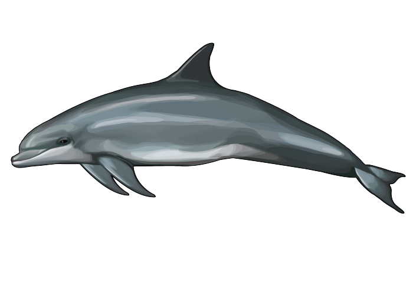
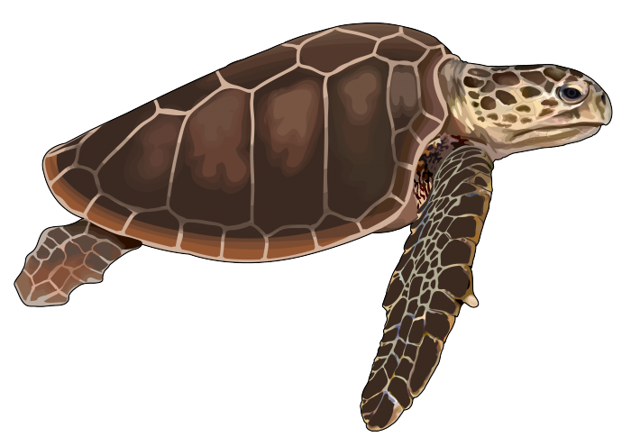
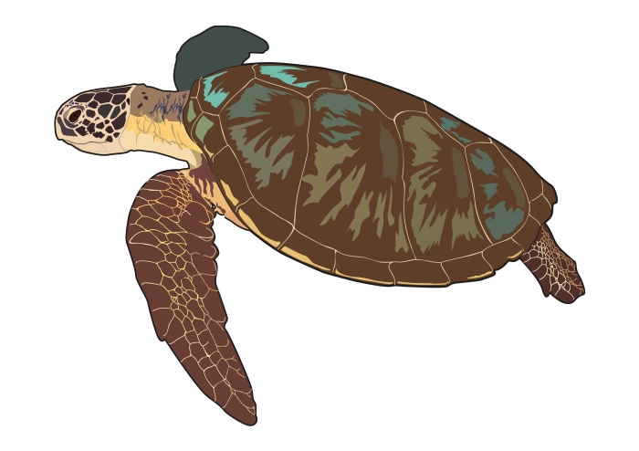

Delfin Listado
El delfín listado (Stenella coeruleoalba) es una especie muy activa y ágil, reconocida por sus franjas oscuras características que recorren sus flancos. Es una especie social que forma grupos grandes.
Estos delfines son visitantes frecuentes de las aguas del archipiélago canario, especialmente en los alrededores de Tenerife. Son muy observados en excursiones de avistamiento de cetáceos gracias a las aguas ricas en vida marina que rodean la isla.

Tortuga Boba
La tortuga boba (Caretta caretta) es una de las especies más comunes de tortugas marinas en el Atlántico. Se caracteriza por su gran cabeza y su caparazón marrón.
Estas tortugas suelen encontrarse en las aguas de Canarias, especialmente durante sus fases juveniles. Tenerife cuenta con programas de conservación para la tortuga boba, ya que a menudo llegan heridas o atrapadas en redes, siendo rehabilitadas en centros como el Centro de Recuperación de Fauna Silvestre de La Tahonilla.

Tortuga Verde
La tortuga verde (Chelonia mydas) es una de las tortugas marinas más grandes, conocida por su caparazón verde oliva y su dieta predominantemente herbívora.
Aunque menos común que la tortuga boba, la tortuga verde también es avistada ocasionalmente en las aguas de Canarias. La conservación de sus hábitats en la región es crucial debido a las amenazas globales como la contaminación y las redes de pesca.

Tiburón Azul
El tiburón azul (Prionace glauca) es un tiburón elegante de cuerpo alargado y color azul intenso. Se alimenta principalmente de calamares y peces pequeños.
Este tiburón frecuenta las aguas profundas que rodean Canarias, donde encuentra alimento en abundancia. Aunque no suele acercarse a las costas, su presencia es un indicador de la salud del ecosistema marino en la región.